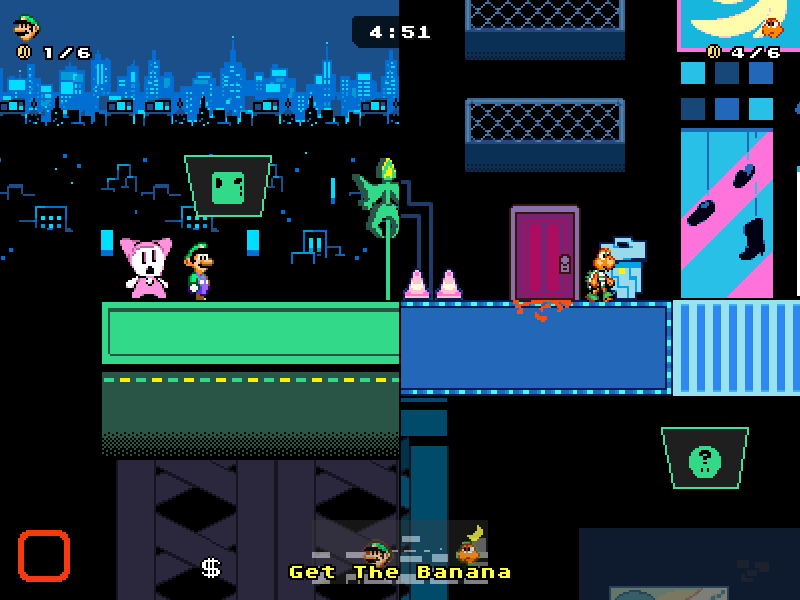
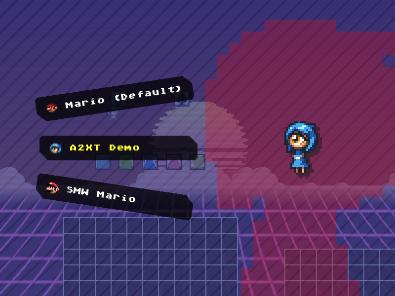

Changelog
v1.2.0 - 2025/06/01


Additions/Changes
-
Costumes are now player-specific rather than applying to all players of the same character.
- As a result of the new costume system, costumes can no longer change the player's hitbox.
- Added two new levels: "The Suck" and "CYBER WORLD".
- Added . Good luck!
- Added a menu for changing costumes.
- The minimap is more detailed, now showing the terrain of the level.
- Extra information is now displayed on the loading screen before a game.
- Added a countdown during the last 10 seconds.
- Added an extra piece of hub music.
- Added a "mute music" option.
- Added "disableMap" and "disableSplitScreen" configs for levels.
- Changed the time to vote for a level from 15 seconds to 20.
Netcode Improvements
- Clients can now communicate directly with one another rather than having to go through the host. This should result in everything being much more stable when playing with more than two players, and also resolves a lot of host advantage. In some cases, this effectively halves the latency.
- Players and NPCs will no longer accept an out-of-order update, which should result in less "jerky" movement.
- Player projectiles such as fireballs, hammers, etc. are now attacker-favoured rather than defender-favoured, making them more fair to avoid.
- NPCs transforming upon being jumped on (e.g., koopas turning into shells) should now work much more reliably.
- Some NPCs (such as the stars in Star Catcher) now use a "fair collection" system which ensures that the correct player gets them.
- Made players standing on moving layers appear more stable.
- Fixed a bug that would sometimes cause NPCs to not spawn.
- Fixed errors and some overall brokeness with lineguided NPCs.
- Fixed bombs becoming stuck and constantly making explosion sounds.
- Players using warps are now better synced.
Fixes
- Fixed a softlock that could occur if someone stops responding before the level select opens.
- Fixed an oversight that caused the more descriptive error messages when trying to join a room to never be displayed in practice.
- Fixed a bug that could cause onNPCTransform to not run (especially after being frozen), often resulting in extra settings not being initialised properly.
- Fixed the player's character and costume changing when joining/leaving an online room.
- Fixed the shockwaves of the Stone being able to stun players on the same team and players in statue form.
- Fixed how a player's outline is rendered when using a Boo Mushroom.
- Fixed the player icons on the HUD not displaying correctly in horizontal split screen.
- Fixed a bug that caused the HUD to not display correctly in Recon Mode when seamless wrap was enabled.
v1.1.0 - 2024/09/29
- Added team battles. The host can enable and choose teams from the settings menu.
- Added a "reserve box enabled" option (enabled by default). This gives Mario and Luigi the ability to hold powerups in reserve, as they normally would.
- Added the minPlayers, maxPlayers, unplayableLocally and unplayableOnline configs for levels. These disable the selection of a level if their conditions are not met.
- Added a warning when pausing the game by unfocusing the window during online play.
- Multiple players in the same room can no longer share a color.
- Improved how levels which include a text_english.json file work (there is no longer a risk of this causing forward compatibility issues).
- When spectating another player, that player's coin counter is now visible.
- Fixed a bug that could cause an "empty player" to appear after a player had disconnected from the room.
- Fixed a bug where, online, the start of another player's jump could look weird if they were playing as Peach or Link.
- Fixed an error with swinging platforms online.
v1.0.1 - 2024/08/24
- Added a "start with mushroom" option.
- Fixed an error that would happen when attempting to press a button that was greyed out.
- Fixed being able to access the console when playing normally.
v1.0.0 - 2024/08/23
Initialise release!